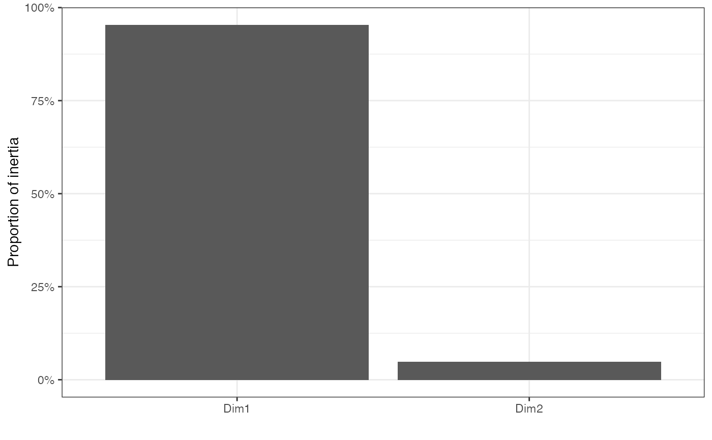
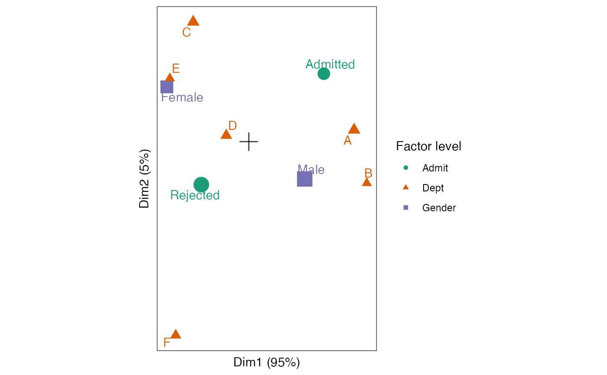
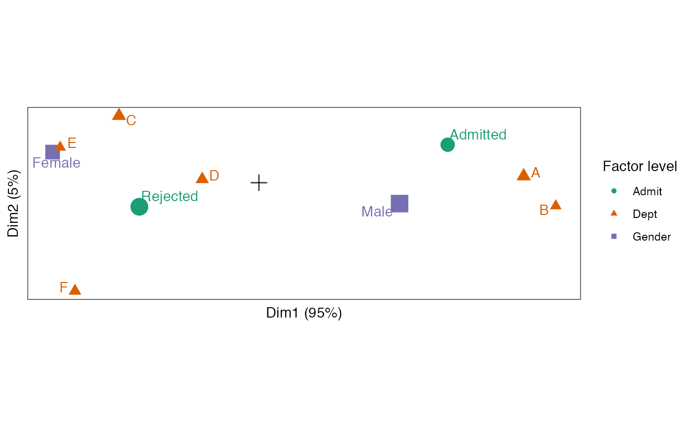

methods-mjca.RdThese methods extract data from, and attribute new data to,
objects of class "mjca" from the ca package.
# S3 method for mjca as_tbl_ord(x) # S3 method for mjca recover_rows(x) # S3 method for mjca recover_cols(x) # S3 method for mjca recover_inertia(x) # S3 method for mjca recover_conference(x) # S3 method for mjca recover_coord(x) # S3 method for mjca augmentation_rows(x) # S3 method for mjca augmentation_cols(x) # S3 method for mjca augmentation_coord(x)
| x | An ordination object. |
|---|
#> [1] "table"#> Admit Gender Dept Freq #> 1 Admitted Male A 512 #> 2 Rejected Male A 313 #> 3 Admitted Female A 89 #> 4 Rejected Female A 19 #> 5 Admitted Male B 353 #> 6 Rejected Male B 207# perform multiple correspondence analysis UCBAdmissions %>% ca::mjca() %>% as_tbl_ord() %>% print() -> admissions_mca#> # A tbl_ord of class 'mjca': (4526 x 2) x (10 x 2)' #> # 2 coordinates: Dim1 and Dim2 #> # #> # Rows (standard): [ 4526 x 2 | 0 ] #> Dim1 Dim2 | #> | #> 1 3.33 2.68 | #> 2 3.33 2.68 | #> 3 3.33 2.68 | #> 4 3.33 2.68 | #> 5 3.33 2.68 | #> #> # #> # Columns (standard): [ 10 x 2 | 0 ] #> Dim1 Dim2 | #> | #> 1 1.08 0.975 | #> 2 -0.681 -0.617 | #> 3 -1.18 0.786 | #> 4 0.802 -0.536 | #> 5 1.51 0.167 | #> 6 1.69 -0.596 | #> 7 -0.797 1.72 | #> 8 -0.323 0.0886 | #> 9 -1.13 0.908 | #> 10 -1.05 -2.78 |#> # A tibble: 1 x 7 #> rank n.row n.col inertia prop.var.1 prop.var.2 class #> <int> <int> <int> <dbl> <dbl> <dbl> <chr> #> 1 2 4526 2 0.121 0.953 0.0472 mjca#> Dim1 Dim2 #> 1 3.329095 2.677869 #> 2 3.329095 2.677869 #> 3 3.329095 2.677869 #> 4 3.329095 2.677869 #> 5 3.329095 2.677869 #> 6 3.329095 2.677869#> Dim1 Dim2 #> Admit:Admitted 1.0755937 0.97498065 #> Admit:Rejected -0.6812223 -0.61749947 #> Gender:Female -1.1754531 0.78621850 #> Gender:Male 0.8015445 -0.53612447 #> Dept:A 1.5089025 0.16734197 #> Dept:B 1.6915413 -0.59572318 #> Dept:C -0.7971633 1.71719606 #> Dept:D -0.3230636 0.08856383 #> Dept:E -1.1324440 0.90837076 #> Dept:F -1.0481066 -2.77962052#> # A tbl_ord of class 'mjca': (4526 x 2) x (10 x 2)' #> # 2 coordinates: Dim1 and Dim2 #> # #> # Rows (standard): [ 4526 x 2 | 4 ] #> Dim1 Dim2 | .name .mass .dist .inertia #> | <chr> <dbl> <dbl> <dbl> #> 1 3.33 2.68 | 1 1 0.000221 0.00672 9.97e-9 #> 2 3.33 2.68 | 2 2 0.000221 0.00672 9.97e-9 #> 3 3.33 2.68 | 3 3 0.000221 0.00672 9.97e-9 #> 4 3.33 2.68 | 4 4 0.000221 0.00672 9.97e-9 #> 5 3.33 2.68 | 5 5 0.000221 0.00672 9.97e-9 #> # … with 4,521 more rows #> # #> # Columns (standard): [ 10 x 2 | 6 ] #> Dim1 Dim2 | .name .factor .level .mass .dist #> | <chr> <chr> <chr> <dbl> <dbl> #> 1 1.08 0.975 | 1 Admi… Admit Admit… 0.129 0.792 #> 2 -0.681 -0.617 | 2 Admi… Admit Rejec… 0.204 0.502 #> 3 -1.18 0.786 | 3 Gend… Gender Female 0.135 0.784 #> 4 0.802 -0.536 | 4 Gend… Gender Male 0.198 0.534 #> 5 1.51 0.167 | 5 Dept… Dept A 0.0687 1.22 #> 6 1.69 -0.596 | 6 Dept… Dept B 0.0431 1.58 #> 7 -0.797 1.72 | 7 Dept… Dept C 0.0676 1.18 #> 8 -0.323 0.0886 | 8 Dept… Dept D 0.0583 1.26 #> 9 -1.13 0.908 | 9 Dept… Dept E 0.0430 1.54 #> 10 -1.05 -2.78 | 10 Dept… Dept F 0.0526 1.39 #> # … with 1 more variable: #> # .inertia <dbl>#> # A tibble: 2 x 4 #> .name .sv .inertia .prop_var #> <fct> <dbl> <dbl> <dbl> #> 1 Dim1 0.339 0.115 0.953 #> 2 Dim2 0.0755 0.00569 0.0472# scree plot of proportion of variance (inertia) tidy(admissions_mca) %>% ggplot(aes(x = .name, y = .prop_var)) + theme_bw() + scale_y_continuous(labels = scales::percent) + geom_col() + labs(x = "", y = "Proportion of inertia")# fortification adds all above columns fortify(admissions_mca)#> # A tibble: 4,536 x 9 #> Dim1 Dim2 .name .mass .dist .inertia .matrix .factor .level #> <dbl> <dbl> <chr> <dbl> <dbl> <dbl> <chr> <chr> <chr> #> 1 3.33 2.68 1 0.000221 0.00672 0.00000000997 rows NA NA #> 2 3.33 2.68 2 0.000221 0.00672 0.00000000997 rows NA NA #> 3 3.33 2.68 3 0.000221 0.00672 0.00000000997 rows NA NA #> 4 3.33 2.68 4 0.000221 0.00672 0.00000000997 rows NA NA #> 5 3.33 2.68 5 0.000221 0.00672 0.00000000997 rows NA NA #> 6 3.33 2.68 6 0.000221 0.00672 0.00000000997 rows NA NA #> 7 3.33 2.68 7 0.000221 0.00672 0.00000000997 rows NA NA #> 8 3.33 2.68 8 0.000221 0.00672 0.00000000997 rows NA NA #> 9 3.33 2.68 9 0.000221 0.00672 0.00000000997 rows NA NA #> 10 3.33 2.68 10 0.000221 0.00672 0.00000000997 rows NA NA #> # … with 4,526 more rows# column-standard biplot of factor levels admissions_mca %>% ggbiplot() + theme_bw() + theme_biplot() + geom_origin() + #geom_rows_point(stat = "unique") + geom_cols_point(aes(color = .factor, shape = .factor, size = .mass)) + geom_cols_text_repel(aes(label = .level, color = .factor), show.legend = FALSE) + scale_color_brewer(palette = "Dark2") + scale_size_area(guide = FALSE) + labs(color = "Factor level", shape = "Factor level")# column-principal biplot of factor levels admissions_mca %>% confer_inertia("colprincipal") %>% ggbiplot() + theme_bw() + theme_biplot() + geom_origin() + #geom_rows_point(stat = "unique") + geom_cols_point(aes(color = .factor, shape = .factor, size = .mass)) + geom_cols_text_repel(aes(label = .level, color = .factor), show.legend = FALSE) + scale_color_brewer(palette = "Dark2") + scale_size_area(guide = FALSE) + labs(color = "Factor level", shape = "Factor level")